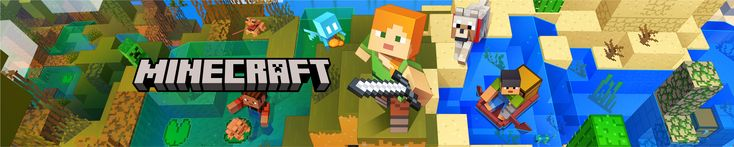

| List of In-Game Essential Minecraft Items | ||
|---|---|---|
| # | Item Name | Comments |
| 1 | Diamond Pickaxe | Essential for mining obsidian and ancient debris |
| 2 | Crafting Table | Core tool for creating most items and blocks |
| 3 | Wooden Planks | Basic building material and fuel source |
| 4 | Iron Ore | Smelted to create durable tools and armor |
| 5 | Coal | Primary fuel for smelting and torches |
| 6 | Dirt Block | Easiest block to mine; great for terraforming |
| 7 | Stone Pickaxe | Minimum requirement for mining iron ore |
| 8 | Chest | Essential storage for organizing your inventory |
| 9 | Torch | Lights up dark areas and prevents mob spawning |
| 10 | Wooden Door | Creates entry points and controls mob movement |
| 11 | Bed | Allows you to sleep and skip nights safely |
| 12 | Furnace | Smelts ores and cooks food |
| 13 | Sticks | Used in crafting tools, weapons, and furniture |
| 14 | Wheat | Grows as a crop; feeds animals and restores hunger |
| 15 | Leather | Crafted into basic armor or traded with villagers |
| 16 | Obsidian | Indestructible block; used for Nether portals |
| 17 | Nether Portal Frame | Gateway to the Nether dimension |
| 18 | Ender Pearl | Teleports you short distances; drops from Endermen |
| 19 | Redstone | Powers mechanisms and creates complex contraptions |
| 20 | Iron Ingot | Crafted into tools, armor, and buckets |
| 21 | Gold Ore | Creates enchanting tables and decorative items |
| 22 | Emerald | Villager currency for trading goods |
| 23 | Enchanting Table | Adds magical properties to tools and armor |
| 24 | Bookshelf | Required for enchanting table functionality |
| 25 | Ladder | Allows vertical climbing on walls |
| 26 | Sand | Used for glass-making and decorative builds |
| 27 | Water Bucket | Essential for farming, transport, and safety |
| 28 | Apple | Restores hunger and can be crafted into golden apples |
| 29 | String | Crafted into wool or used for bows and tripwires |
| 30 | Netherite Ingot | Strongest material for top-tier tools and armor |